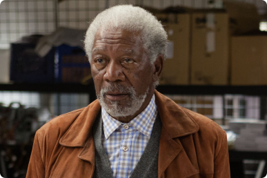

Wally Pfister
Director de fotografía, ganador de un premio de la academia en 2011 por su trabajo en Inception.
Su primera película como director fue Transcendence estrenada en 2014.
La tecnología no es problema; el miedo a ella, sí.
SOME ACTORS
JOHNNY DEPP
REBECCA HALL

MORGAN FREEMAN
MORGAN FREEMAN
CILLIAN MURPHY
INTRODUCTION